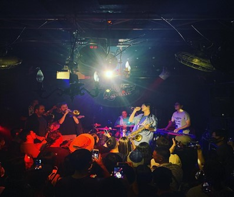

雖然中國的人口及市場都遠比台灣龐大，但說到經營Live House的悠久時光可比不上台灣歐! 身為展演空間長青樹的女巫店正是其代表。調皮的菜單及料理、舒服的空間及氛圍，便是這些種種，使人在無意間流連忘返。
20年前，女巫店的主人和客人們，大概沒有預料到，曾在這裡洗盤子的張懸、在這裡初試啼聲的青峰，會成為年輕人喜愛的創作歌手；沒意料到陳綺貞、雷光夏、陳珊妮、魏如萱、巴奈的好聲音會有如此多的粉和迷，她／他們開始被聽見、被追隨。
回溯到女巫店成立的1995年前後，當時解嚴後近10年，這種從長期壓抑的政治結構鬆動下所醞釀的社會氛圍，是一種迫不及待的蠢蠢欲動。到90年代的性解放，如今現在這些掛在椅背上，五顏六色的胸衣，就像是某種裝置藝術般，展現出女巫店特有個性，成為店裡最搶眼的物件。
女巫店的創辦人彭郁晶說：「女巫在過去的社會，扮演著心靈諮商或是芳療師的角色，一個個都是很厲害的人喔！」對於過去古代社會裡，多被指責為異端邪說，遭受歧視的女巫，彭郁晶一語道出女巫的正面意義。若非很厲害的角色，又如何能夠對抗社會的各方壓力，選擇做自己。就和這裡獨立創作的樂手一樣，某種狀態都是很孤獨的奮鬥。
地址: 台北市大安區新生南路三段56巷7號
交通: 位於捷運公館站附近，3號出口步行10分鐘就能抵達歐!
來看看我們的其他文章吧!

永豐Legacy Taipei 傳音樂展演空間
創造傳奇的指標性舞台

The Wall Live House
這牆回響不絕!

西門河岸留言
夢想的起跑點

小地方
最溫馨的角落

Revolver
打入死寂靜夜的一聲槍響

Pipe Live Music
充滿古典韻味的純白天堂

三創Clapper Studio
新世代的發聲計畫

海邊的卡夫卡
輕、食與感動